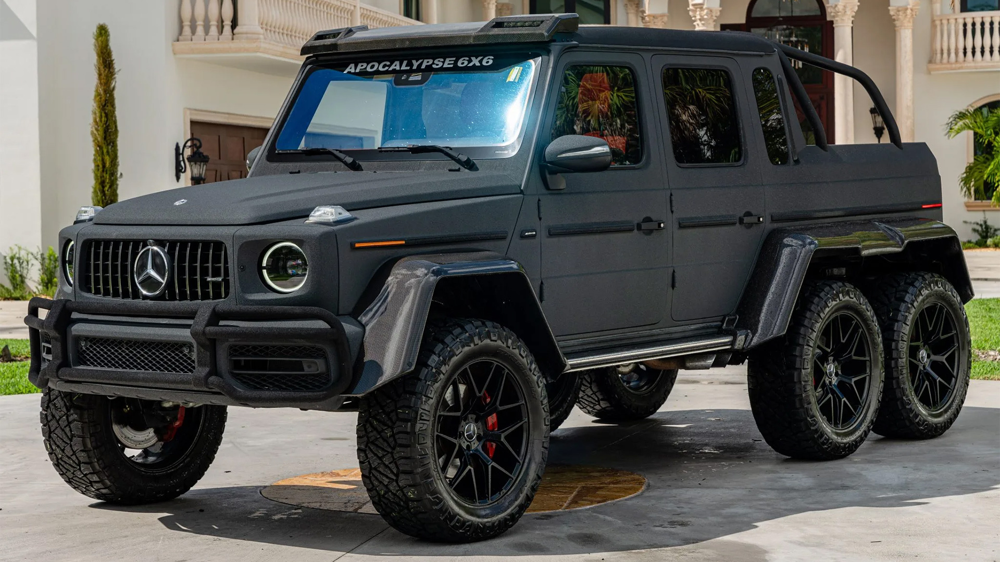
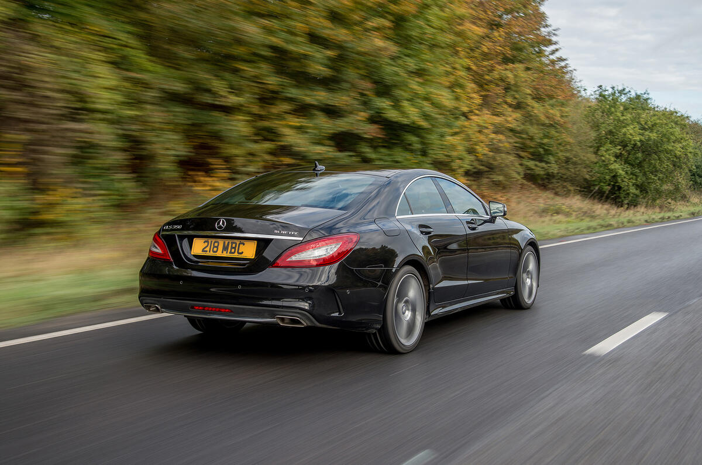

Mercedes-Benz is a globally renowned German luxury automobile brand celebrated for its innovation, performance, engineering excellence, and safety standards. Established in 1926 and headquartered in Stuttgart, Germany, the company produces a comprehensive fleet ranging from everyday premium hatchbacks to ultra-luxury sedans, high-performance sports cars, and heavy commercial vehicles.
.jpg)
Mercedes-Benz organizes its passenger vehicles into intuitive alphabetical classes that signify their segment
and body style.
Saloons & Hatchbacks: The compact A-Class serves as the brand's entry-level model, scaling up to the executive
C-Class, the mid-size luxury E-Class, and the flagship S-Class—which represents the absolute pinnacle of automotive
luxury and cutting-edge technology.SUVs: Broadly designated by the "GL" prefix, the lineup features the compact GLA
and GLB, the highly popular mid-size GLC and GLE, and the full-sized, three-row GLS.The G-Class: Affectionately known
as the G-Wagon, this boxy, body-on-frame icon delivers extreme off-road capability paired with elite interior
refinement.Coupés & Roadsters: Dynamic options like the sleek CLA four-door coupé, the elegant CLE, and the classic
SL Roadster cater to performance


